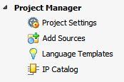

The Project Manager environment lets you work in the current project without having an open in-memory design. You can access this environment any time by clicking Project Manager in the Flow Navigator.
|
In this environment you can:
|
 |
See Also
| Vivado Design Suite User Guide: Using the Vivado IDE (UG893) | |
 |
Vivado Design Suite QuickTake Video: Getting Started with the Vivado IDE |